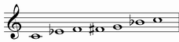

| NAME | NOTES |
| BLUES |  |
BLUES SCALE |
It is a Minor Pentatonic scale with an augmented fourth added
| MINOR PENTATONIC | C | Eb | F | G | Bb | C | |||||||
| BLUES SCALE | C | Eb | F | F# | G | Bb | C |
Structure: 321132
This artificial scale is very useful and can be played over every kind of chord (major, minor, dominant, ecc.) and over every blues progression or turnaround.
Its tipical bluesy sound cames from the blue notes this scale contains: minor third, minor seventh, augmented fourth.